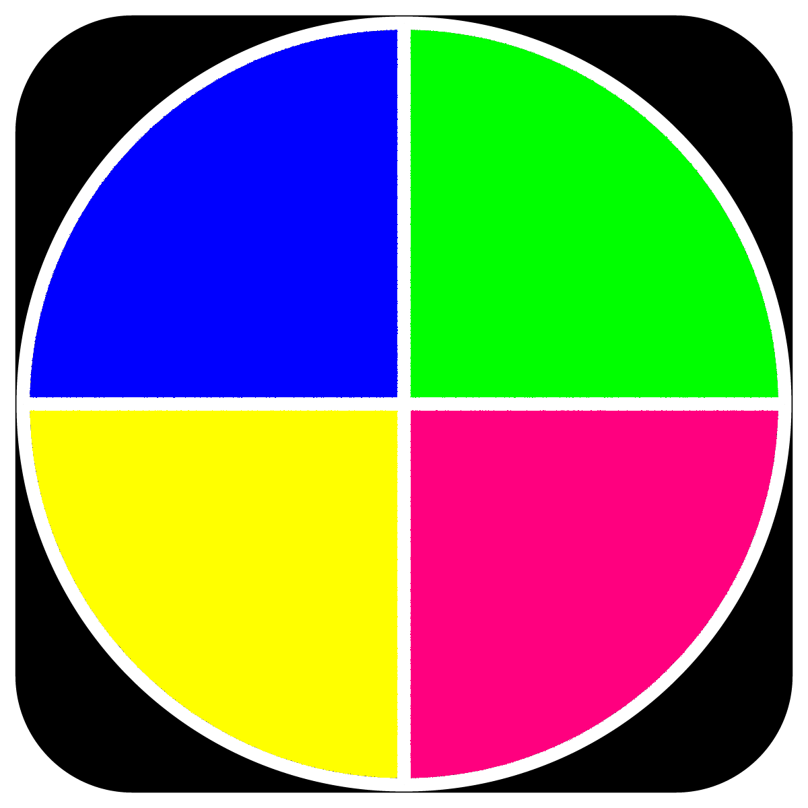

Colour Bounce
This p5.js project features a bouncing ball that changes color when colliding with colorful boxes. Users can click to launch the ball and stop it by clicking again, turning it black. The boxes rotate colors every 5 seconds, adding visual variety. The project demonstrates motion, collision detection, and user interaction for playful experience.
Feed the Cookie Monster
This game features the Cookie Monster, who catches falling cookies. Apples cause the Cookie Monster to lose points, while Super Cookies grant bonus points. As the game progresses, cookies fall faster, increasing the challenge. Players must avoid apples and catch the cookies for rewards.
Calify
This code processes an user uploaded ICS file, classifies events into categories like Class, Personal, Meeting, etc, using keywords and a pre-trained machine learning model. It assigns each event a color based on its category and displays event details for a selected day. Users can choose a day, and view categorized events with color-coded labels.